In this section we show how some of the results presented on stabilizability of switched systems can be applied to investigate the problem of exact output tracking and minimum phase properties of a class of polynomial systems, which are not affine in the control. The material in this section is based on [11].
Consider the following class of non control-affine systems
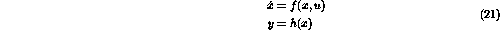
where
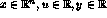
and f and h are analytic vector valued functions of their arguments. The system (21) is a generalization of the nonlinear systems usually investigated in the nonlinear literature [7, 12], which is affine in the control. A good discussion on the motivation for considering the zero dynamics of the system (21) can be found in [4].Note that the usual way of investigating systems of the form (21) is to introduce an integrator at the plant input [12], which transforms it into a control-affine system. However, the new augmented system may have the following undesirable properties according to [4]:
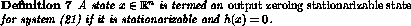
Without loss of generality, it can be assumed that the origin is an output zeroing stationarizable state. We use the notation
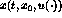
to denote the solution of (21) with initial value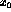
.
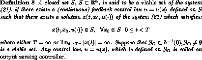
Hence, a viable set is a subset of the state space that can be made invariant by a suitable choice of state feedback.
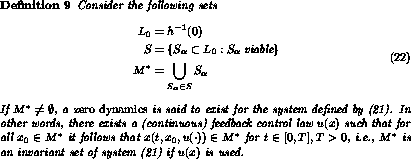
Definitions 8 and 9 are taken from [4], where continuity of the output zeroing controllers is required. We drop this assumption in the sequel.
The following definition of minimum phase is due to [11] and differs from the usual definitions found in [7, 12]. Observe that continuity of output zeroing controllers is not required and the problem of minimum phase is that of stabilizability and not of stability of the zero dynamics.
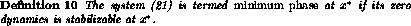
In the sequel we will assume that there exists zero dynamics and an a priori known output zeroing stationarizable state
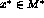
at which we wish to investigate the minimum phase property.
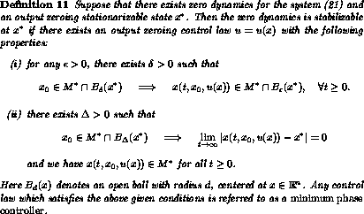
In order to analyze the minimum phase property it is very useful if we transform the system into a normal form [7]. Suppose that the system (21) has a relative degree
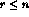
at an output zeroing stationarizable state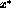
. Then there exists a locally invertible coordinate transformation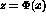
such that the system (21) is transformed into the following form [12]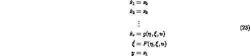
where
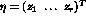
and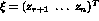
. We say that the zero dynamics is defined by
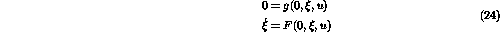
which corresponds to Definition 9.
If we suppose that
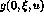
and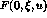
are vector valued polynomial functions, we can use the result in the previous section to investigate minimum phase properties. Since u is implicitly defined by the equation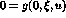
there might be several solutions u for a given x, which cannot happen in the control-affine case. Analysis of minimum phase properties for non control-affine nonlinear systems which is based on linearization was considered in [11, 10].A number of issues arise when investigating the output zeroing control laws and the stability of the corresponding zero dynamics, which are not incorporated into the known definitions of minimum phase. We will illustrate these issues in a number of examples and at the same time demonstrate how quantifier elimination can be applied to analyze the stabilizability of the zero dynamics. To be able to use quantifier elimination we specialize our study to polynomial systems.